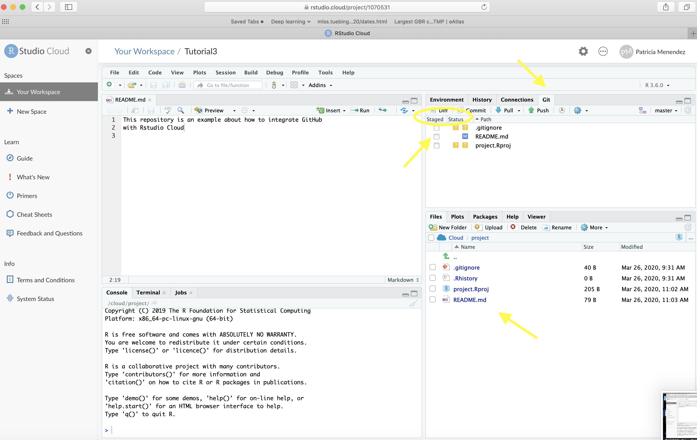
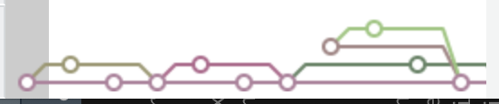
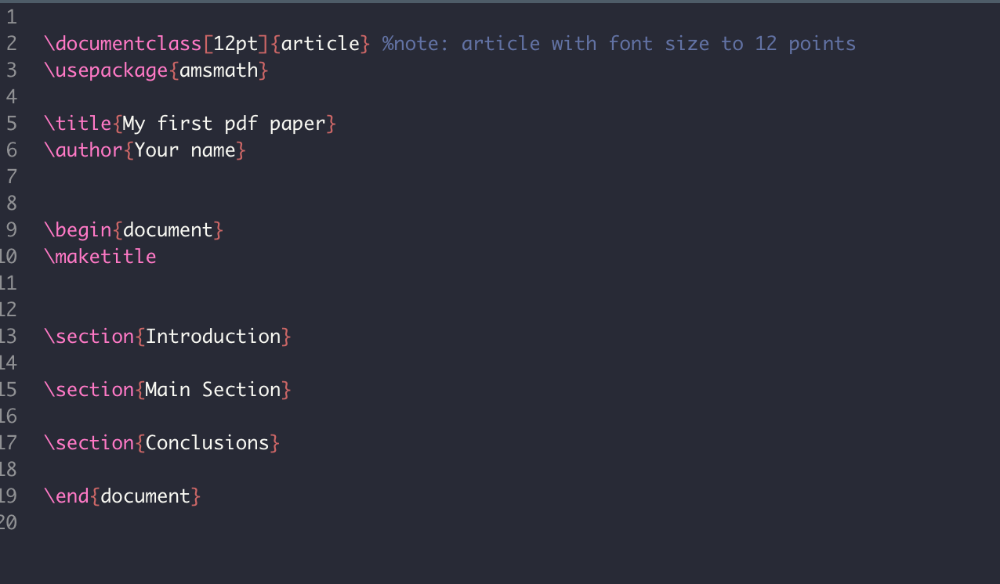
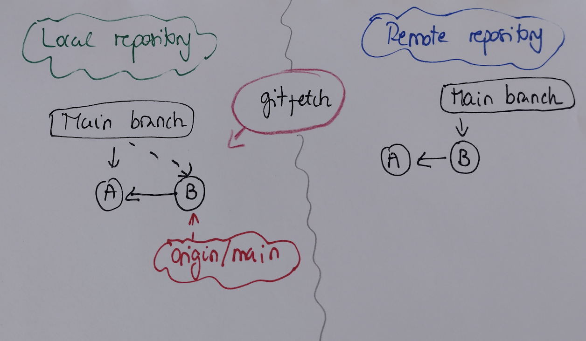

ETC5513: Reproducible and Collaborative Practices
Keeping environments separate and reproducible
Lecturer: Michael Lydeamore
Department of Econometrics and Business Statistics
Open Frame

Recap
- Learn how to add references and bibliography
- Dealing with large files
- Tags
- GitHub issues
Today’s plan
Aim
- Create a
gitproject from an existing local folder - Licensing a repository
- Lightweight dependency management
- Advanced collaborative practices
- Templates for slides
Debugging demo
Reproducibility using Docker
This is just for your information and it is not part of the material that is going to be examined.
Reproducibility using Docker
Docker is a program that allows to manipulate (launch and stop) multiple operating systems (called containers) on your machine (your machine will be called the host).
Source here.
Docker is designed to enclose environments inside an image / a container
Reproducibility using Docker
Reproducibility using Docker
Review of the main things that we have learned
ETC5513 Unit Objectives
- Develop skills to create reproducible documents.
- Understand the operation of version control systems.
- Advance use of version control.
- Utilize version control to integrate data analysis efforts of team members.
- Effectively work with a group to construct a collaborative data science project.
Reproducibility and Replicability
Definitions by the USA National Academies of Science, Engineering and Medicine:
Tip
Reproducibility (“computational reproducibility”) means obtaining consistent computational results using the same input data, computational steps, methods, code, and conditions of analysis.
Replicability means obtaining consistent results across studies aimed at answering the same scientific question, each of which has obtained its own data
Critical issue

Reproducible research
- Working to make your research reproducible does require extra upfront effort.
- Making a project reproducible from the start encourages you to use better work habits.
- It should push you to bring your data and source code up to a higher level of quality than you might if you “thought ‘no one was looking’” [Donoho, 2010, 386].
- Reproducible research needs to be stored so that other researchers can actually access the data and source code.
- Changes are easier to implement \(\rightarrow\) specially when using dynamic reproducible documents.
- Reproducible research has higher impact.
Tools for reproducible research
- R programming language
- R enables researchers to read data, create data visualizations and run statistical analyses.
- R has thousands of libraries
- R has a very active development community that is constantly expanding.
- R libraries/packages facilitate reproducibility:
- Knitr and Rmarkdown:
- Allow us to connect R-based analyses to presentation, papers and reports documents created with markup languages such as LaTeX and Markdown
- Knitr and Rmarkdown:
Rstudio
- RStudio is an integrated developer environment (IDE):
- R by itself has the capabilities necessary to gather and analyze data, and with a little help from knitr/Rmarkdown and markup languages, present results in a way that is highly reproducible.
RStudio allows you to do all of these things more easily. - It also is a happy medium between R’s text-based interface and a pure GUI. - It is not the only IDE! - It is closely integrated with the version control programs Git and SVN.
Version control
Tip
Version Control is a system that records changes to a file or set of files over time so that you can recall specific versions later.
Git
“Git is a distributed version-control system for tracking changes in source code during software development. It is designed for coordinating work among programmers, but it can be used to track changes in any set of files. Its goals include speed, data integrity, and support for distributed, non-linear workflows”
https://en.wikipedia.org/wiki/Git
Git and GitHub

Tools
- R
- Rstudio
- Git
- GitHub
- VS code
Workflow for reproducible research

Reproducible Research with R and Rstudio by Christopher Gandrud
What is Markdown?
Tip
Markdown is a lightweight markup language that you can use to add formatting elements to plain text text documents.
It was created by John Gruber in 2004. Read more here
- Markdown is a “text” formatting syntax
- Can be easily render to more complex formats such as: pdf, html, pdf, docx
Markdown example
Quarto and knitr
- Quarto is a package within R that allows us to create documents using Markdown
- Knitr is an R package that allows us to render Rmarkdown code into html, pdf, docx
Quarto file structure
Three main components:
- YAML
- Text
- R Code Chunks
Quarto anatomy
- Metadata: It is written in markdown at the top of the file between ‘—’ in YAML
Quarto anatomy
- Text is written in markdown
R code chunks
You can quickly insert R chunks into your file with
- the keyboard shortcut Ctrl + Alt + I (OS X: Cmd + Option + I)
- the Add Chunk command in the editor toolbar
- or by typing the chunk delimiters
Chunk options
Chunk output can be customized with options, marked by the “hashpipe”: #|
include: falseprevents code and results from appearing in the finished file. Quarto still runs the code in the chunk, and the results can be used by other chunks.echo: falseprevents code, but not the results from appearing in the finished file. This is a useful way to embed figures.
More R code chunk options
eval: falseprevents evaluating the code and include its resultsmessage: falseprevents messages that are generated by code from appearing in the finished file.warning: falseprevents warnings that are generated by code from appearing in the finished.fig-cap: ...adds a caption to graphical results.
R code chunks
Global options
To set global options that apply to every chunk in your file, call
knitr::opts_chunk$set()
in an R code chunk.
Knitr will treat each option that you pass to knitr::opts_chunk$set() as a global default that can be overwritten in individual R code chunk headers.
Caching
- If document rendering becomes time consuming due to long computations you can use knitr caching to improve performance.
- Knitr chunk and package options (here) describes how caching works
- The cache examples (here) provide additional details.
cache: true is an option within the chunks or you can set it as a global option.
Caution
Caching might prevent you from updating some results. Because of that, it is essential that you use it only when you are sure your R code chunks are working fine. Setting cache = TRUE as a global option might be dangerous so be very careful.
Quarto workflow

Thanks to knitr and pandoc

knitr executes the code and coverts the .qmd to .md
pandoc renders the .md file to the output format you want
Learning more about creating Quarto documents
When we have figures or plots in our reports it is a great idea to set up some global options at the beginning of our document:
Keeping our R figures inside a folder
---
title: "My Report"
author: "Michael Lydeamore"
format:
html:
keep_md: true
--- Inserting figures
Using markdown syntax:
Using Knitr syntax
Displaying figures
Options inside your R code chunks
fig-align: alignment of the figures in the report with options default, center, left, or rightfig-cap: captionsfig-height&fig-width: size of the figure in inchesout-height&out-width: size of your plot in the final file. Useful to resize your figures by say 50%
Computer paths: Absolute and Relative Paths
An absolute or full path begins with a drive letter followed by a colon, such as D: or /users.
- Windows:
C:\documents\charlie - Mac/linux:
/Users/documents/courses/ETC5513
A relative path refers to a location that is relative to a current directory:
ETC5513/exercise.Rmd
(no matter where the folder sits things can actually run)
It is essential to understand where your directories and files are within your computer. Having clarity about that and the projects file architecture gives you total control about its organization
R/ Rstudio projects
Each project has a unique working directory
Clean file system: all files related to a single project should be in the same folder
- data: typically is a folder
- code
- figures: typically is a folder
- notes
File path discipline: all paths should be relative to the project’s folder
Refer to the computer location where files and folders are.
Remember, absolute paths are not reproducible
RStudio Project Example
Rstudio projects
RStudio Projects are associated with R working directories.
You can create an RStudio project:
- In a brand new directory
- In an existing directory where you already have R code and data
- From a version control repository
Read more on Rstudio projects here
Inside Rstudio how do we create a new project?
File > New project > (Few options)
RStudio projects advantages
When a new project is created RStudio:
- Creates a project file (with an
.Rprojextension) within the project directory. - This file can also be used as a shortcut for opening the project directly from the filesystem.
- Creates a hidden directory (named
.Rproj.user) where project-specific temporary files (e.g. auto-saved source documents, window-state, etc.) are stored. - Loads the project into RStudio and display its name in the Projects toolbar
Remember our goal: Reproducible workflow

Allison Horst (@allison_horst)
Different Version control Systems

- These systems fully mirror the repository, including its full history in various servers/locations
- If any server malfunction, and these systems were collaborating via that server, any of the client repositories can be copied back up to the server to restore it.
- Every clone is really a full backup of all the data.
Distributed Version Control: Git
We use a distributed version control called Git
Git overview in a nutshell
Let’s think of the connections between the different versions of an R project as a tree (Git tree).
- Beginning of the project is at the bottom of the tree
- White circles represent each version of the project
- We have what we call
main(default branch) - We have branches that appeared and then merged with main with the main

Git tree and Snapshots (Database)

Illustration source: Begining Git and GitHub
Our friend: The Command Line Interface
Also known as the Shell, command line interface (cli) or terminal is an interface for typing commands to interact directly with a computer’s operating system.
Git and Command Line
Learn how to use the shell/command line interface!
Why??
- We will use the command line interface to interact with Git and with GitHub
- The shell or command line interface is an interface where the user types commands.
- This interface allows us to control our computer using commands entered via our keyboard.
- That means that instead of using a graphical user interface (GUI) + our mouse to open and close programs, create folders and moving files we are going to type commands.
Components of a Git repository: Visually

Three Git States
Git has three main states that your files can reside in: modified, staged, and committed:
Modified: you have changed the file but have not committed it to your database yet.
Staged: you have marked a modified file in its current version to go into your next commit snapshot.
Committed: the data is safely stored in your local database.
This leads us to the three main sections of a Git project: the working tree, the staging area, and the Git directory.
Git recap
- Tracking all the changes to a project
- Allows you to go back and forth between versions
- Check files history
- Tag specific versions for quick referencing
- Review changes made by collaborators in the project
- Create project branches that allow you to work on the project withoutinterfering with the main project
- Merging branches to main project
To interact between our projects and Git, we are going to use the shell/command line interface
Collaboration

GitHub is our remote repository
- GitHub is an interface and cloud hosting service built on top of the Git version control system.
- Git does the version control and GitHub stores the data remotely.
- GitHub makes your projects accessible on a fully feature project website
Git repo and remote repository

GitHub Workflow: Visual example


From clone to push into the remote main branch
git clone: is a Git command line utility which is used to target an existing repository and create a clone, or copy of the target repository.git add: command adds a change in the working directory to the staging area.git commit -m: The git commit command captures a snapshot of the project’s currently staged changes. (m = message for commit. The git commit is used to create a snapshot of the staged changes along a timeline of a Git projects history.)git push origin main: The git push command is used to upload local repository content to a remote repository, in this case to the main branch.
Git recap
- Tracking all the changes to a project
- Allows you to go back and forth between versions
- Check files history
- Tag specific versions for quick referencing
- Review changes made by collaborators in the project
- Create project branches that allow you to work on the project without interfering with the main project
- Merging branches to main project
To interact between our projects and Git, we are going to use the shell/command line interface
GitHub is our remote repository
Creating a repo on GitHub
- Login into GitHub
- Click the ‘+’ icon on the top right on the menu bar and select ‘New Repository’.
Tracked and untracked files
In a git repository tracked files are those which are part of the git repository
However, we can also have untracked files for which their history is not tracked
Tracked files are files that were in the last snapshot; they can be unmodified, modified, or staged. In short, tracked files are files that Git knows about.
Untracked files are everything else — any files in your working directory that were not in your last snapshot and are not in your staging area.
General Workflow (via Terminal)
Once you have cloned the repo, each time you work on the project (via the terminal/command line):
git pull: used to fetch and download content from a remote repository and immediately update the local repository to match that content.git status: displays the state of the working directory and the staging areagit add file_name: adds changes in the working directory to the staging area)git commit -m "Message": used to create a snapshot of the staged changes along a timeline of a Git project historygit push origin branch name: used to upload the local repository content to a remote repository in GitHub
Cheat sheet on how to use the terminal for Git
Excellent summary about the commands that will be using can be found here
Rstudio and GitHub
The status/staging panel in Rstudio:
Rstudio and GitHub
RStudio keeps git constantly scanning the project directory to find any files that have changed or which are new.
By clicking a file’s little “check-box” you can stage it.
Rstudio and GitHub
Understanding the symbols in the Rstudio Git pane:
- Blue-M: a file that is already under version control that has been modified.
- Orange-?: a file that is not under version control (yet…)
- Green-A: a file that was not under version control, but which has been staged to be committed.
- Red-D: a file under version control has been deleted. To make it really disappear, you have to stage its disappearance and commit.
- Purple-R: a file that was renamed. (Note that git in Rstudio seems to be figuring this out on its own.)
Branches
Create branches using the Terminal/Shell/CLI
Using git branch and git checkout:
git branchshow us the branches we have in our repo and marked our current branch with*git branch newbranch_namecreates a new branch but does not move theHEADof the repo there.git checkout newbranch_namemoves theHEADtonewbranch_name
Creating branches
Using the checkout command:
git checkout -b newbranch_namne: creates a new branch and moves the repoHEADto this branch- You can confirm it by using
git branchto see in which branch you are currently in - Checking out a branch updates the files in the working directory to match the version stored in that branch
- It tells Git to record all new commits on that branch.
Merging branches successfully
Suppose we have two branches: main and new_development
- For merging: go to
mainbranchgit checkout main git merge new_development -m "Merging new_development into main"
Remember that if you have VSCode installed and you do git merge new_development then the VSCode editor will open so that you can type your message.
If those steps are successful your new_development branch will be fully integrated within the main branch.
Change branch name
Before you push the new branch to the remote repo:
git branch -m original_name new_name
If you want to renamed a branch that has already been pushed to the remote repo:
- Rename the branch locally
git branch -m old_name_branch new_name git push origin -u newname- Delete the old_name_branch:
git push origin --delete old_name_branch
Stash changes: Apply and pop
The git stash command takes your uncommitted changes and saves them in the git repo away for later use.
Bringing stash into the repo
git stashgit stash applygit stash popgit stash listto see the list of the stashes
Apply
git stash apply will take the changes saved in your stash and apply them into the working directory of your current branch. In addition, the changes are kept in the stash.
This might be useful when you want to apply the same changes into different branches.
Pop
git stash pop will do the same as apply but will delete the stash after applying the changes. git stash pop will apply the changes into your working copy.
Tip
Stash is not a substitute for committing changes
gitignore
- Ignored files are tracked in a special file named
.gitignorethat is checked in at the root of your repository. - There is no explicit git ignore command: instead Git uses a
.gitignorefile which must be edited and committed by hand when you have new files that you wish to ignore. .gitignorefiles contain patterns that are matched against file names in your repository to determine whether or not they shouldbe ignored.
Example of gitignore patterns
Example of a gitignore file
Rebase in practice
Assume the following history exists and the current branch is “Feature”
A---B---C Feature
/
D---E---F---G mainFrom this point, the result of either of the following commands:
git checkout Feature
git rebase main
git rebase main Feature
A'--B'--C' Feature
/
D---E---F---G mainGit rebase and merge
Merging is a non-destructive operation. The existing branches are not changed in any way. This avoids all of the potential problems of rebasing.
Rebasing moves the entire Feature branch to begin on the tip of the main branch, incorporating all of the new commits into main.
Rebasing re-writes the project history by creating brand new commits for each commit in the original branch. Produces cleaner project history.
However, it creates problems with safety and traceability
Golden rule for rebase: Never use it on public branches (main in collaborative projects).
Why do we fork a repository?
A fork is a copy of a repository
Forking a repository allows you to freely experiment with changes without affecting the original project.
Most commonly, forks are used to either propose changes to someone else project or to use someone else project as a starting point for your own project.
Forking a repo in GitHub
Search/navigate repo from within our Github account.
Differences between forking and cloning a repo
A fork is a copy of someone elses GitHub repository saved to your own GitHub account. It allows you to experiment with changes without affecting the original project.
A fork acts as a between the original repository and your personal one.
It will also allow you to interact between your forked copy and the original repo
When you clone a GitHub repository, you are creating a local copy of that repo on your computer
That allows you to work on that repo locally and sync between both your local repo and your remote repo
What is a Pull request?
We use GitHub to share our code and projects with others.
There are situations when another person make changes into your code and wants you to consider those changes.
Examples: Fixing a problem/bug or add new functionality into the repo.
We achieve this by sending a request to the repo’s owner to pull/merge these changes into the owner’s original GitHub repo
That request is called a pull request
Pull request visually

Forked repo
Latex
Latex template
Integrate a latex template into a Quarto file
There are different ways:
- If the file features are not too complicated. We can simply add some of the necessary packages into our YAML preamble.
Integrate a latex template into an Rmd file
- We can use
preamble.tex:

Reference
Commits, hash values and SHA numbers
git log: allow us go back into our project history to see who contributed what, find out past issues or problems and revert problematic changes.
commit 8cfaee1e447d8e83d745b51ffcd310465afb76b1
Author: Patricia Menendez <patricia.menendez@monash.edu>
Date: Sat Apr 4 15:49:54 2020 +1000
Uploading Week4 slides Commits and SHA numbers
git log --oneline: condenses each commit to a single line
3a5bc86 W3 cli updates
4d1b022 W3 shell updateWe can also use git log --pretty=oneline
Detached HEAD
Detached HEAD state gives you the power to check out any commit and explore the older state of a repository without having to create a local branch.
Any commits made in a detached HEAD state will be lost when you check out any branch.
Solution: Create a branch to keep commits
Pull commit from the log into our environment
git checkout 8cfaee1e447d8e8
You are in 'detached HEAD' state. You can look around, make experimental
changes and commit them, and you can discard any commits you make in this
state without impacting any branches by performing another checkout.git checkout -b new_branch_name
Stage and unstage files
git reset filename git reset
Edit/Amend previous commit
If you have not pushed the commit: - git commit --amend: will open your VS code editor so you can amend the commit - git push origin main
git reset: three options
git reset --soft HEAD~1git reset --hard HEAD~1git reset --mixed HEAD~1
HEAD~1: you want to reset the HEAD (the last commit) to one commit before in the log history.
This can be extended to any commit and you can use the notation HEAD~1 or the commit SHA identifier
git reset --soft
Imagine that you have added two files in your latest commit and you want to make a modification in one of the files.
- In this case we can use
git reset --soft HEAD~1to undo our last commit and include additional modifications into the file. - In this case, when we undo the commit the file is still in the repo with changes to be committed but the commit has been removed.
- We have undone the last commit by preserving the changes done to the files in the index (staging area).
- Then we can fix the file and commit the changes again.
git reset --hard
- If we want to undo the last commit and discard all changes in the working directory and index (staging area), we can execute the
git resetcommand with the–-hardoption. - As before we specify the commit before HEAD (
HEAD~1).
Caution
When we use git reset --hard all the changes will be removed from the working directory and from the index (staging area).
git reset --mixed
- If we want to undo the last Git commit, keep changes in the working directory but NOT in the index (staging area), we can use the
git reset --mixedoption. - For the last commit we will need to write
git reset --mixed HEAD~1 - The
git reset --mixedoption is combination of soft and hard reset.
Undoing
The git revert command can be considered an ‘undo’ type command, however, it is not a traditional undo operation. Instead of removing the commit from the project history, it figures out how to invert the changes introduced by the commit and appends a new commit with the resulting inverse content. This prevents Git from losing history, which is important for the integrity of your revision history and for reliable collaboration.
You can think of it as a “rollback”: it points your local environment back to a previous commit. Your “local environment,” refers to your local repository, staging area, and working directory
Removing files
- If the files are untracked you can just remove them: via the terminal or using your OS
- If the files are tracked:
- Removing files and directories/folders:
git rm file.txtgit rm -r Datagit commit -m "Delete file.txt"git status
More on commits
One line commit (we need to main that a little bit more!)
We can add more text into any commit and many times we should be doing that
We can do that using VSCode
Commit structure:
First line Blank Line Rest of the text
Commits structure example

Large files in Git and GitHub
- Files larger than 100 MB need to be dealt with care in GitHub
- Solution: Git LFS
Git Large File Storage lets you store them on a remote server such as GitHub.
Tip
Git Large File Storage (LFS) replaces large files such as audio samples, videos, data sets, and graphics with text pointers inside Git, while storing the file contents on a remote server like GitHub.com or GitHub Enterprise.
Git LFS in practice summary
git lfs install: You only need to run this once per repo.git lfs track "*.csv": In each Git repository where you want to use Git LFS, select the file types you would like Git LFS to managegit add .gitattributes: make sure “.gitattributes” is tracked
Then, continue as usual:
git add file.csvgit commit -m "Add data file"git push origin main
Git LFS in practice summary
If for some reason you have staged/committed a large file before you run the work flow above you can use:
git reset --soft HEAD~1
Git tags
Tags are references that point to specific points in Git history
Example: Specific report release, package release
A tag is like a branch that doesn’t change.
Unlike branches, tags (after being created) have no further history of commits
Great tutorial on tags here
Git tags example
Revisiting git fetch
git pullis a combination of both commandsgit fetchandgit mergeIf you are working on your own,
git pullwould be ok in most cases.However, if you are collaborating with other people who might be simultaneously working in the repo, using
git pullmight not be a good idea!
In that case, it is much better to use git fetch first to see what is happening in the remote repository and to synchronize your repo by merging the changes.
How does fetch work?
git fetch downloaded the new B commit however our local working directory is not updated and the head of our main branch is still pointing to commit A!
How do we merge those branches?
We need to combined main branch with the remote tracking origin/main branch. How?
- By merging!
First we need to move into the main branch and then merge origin/main.
git checkout main
git merge origin/main- If the branches have not diverged, we can merge without conflict via a fast merge.
- If the branches have diverged, we will need to resolve conflicts.
Very useful commands for fetching
git remote: lets you create, view, and delete connections to remote repositories)git branch -vvallows you to check the status of your local and remote branches in relation to each other.git fetch originfetch the changes from remote origingit branch -a: all the branches available in the local repository + all the branches fetched from the remote.
The branches fetched from the remote origin would be preceded by remotes/origin/
Licensing a repository
Public repos in GitHub make your work publicly available and therefore it is important to establish how your work should be acknowledged if someone else wants to use it.
“Public repositories on GitHub are often used to share open source software. For your repository to truly be open source, you’ll need to license it so that others are free to use, change, and distribute the software.””
Choose an open source license

No license

Light weight dependency management

The idea is to create project-local library to ensure that projects gets its own unique library of R packages!
How does the renv R package work?
- Gives each R projects its own project-local library.
- Provides and easy way to connect R sessions to use a specific project-local library
- Provides tools for managing the R packages installed in these project-local libraries
Workflow summary for light weight dependency management using renv package
In the R console:
renv::init()to initialize a project with a project-local libraryrenv::snapshot()to save the project-local library’s saterenv::restore()to restore the project-local library’s state
You will get better with practice!
Tools for R and beyond
You have learned version control: This works for any programming language!
Be confident and use the tools.
Reproducibility
It starts with you.

ETC5513 Week 10